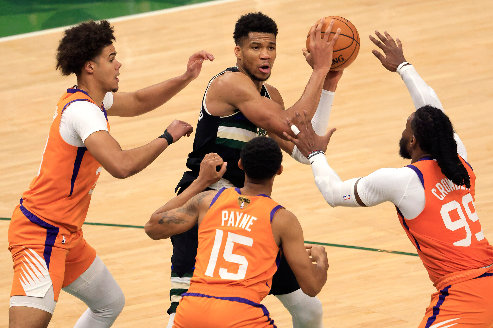
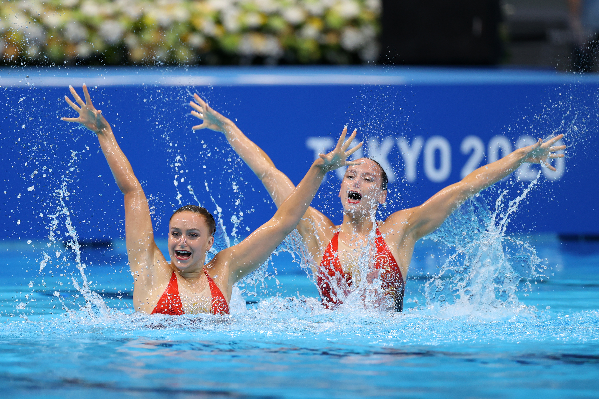
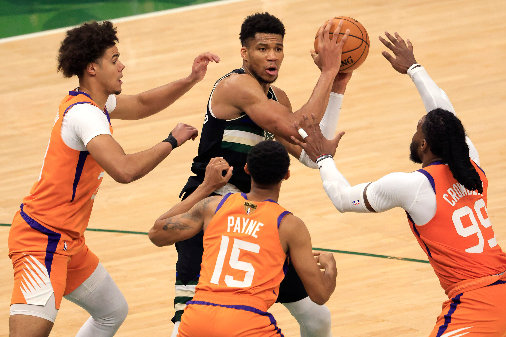
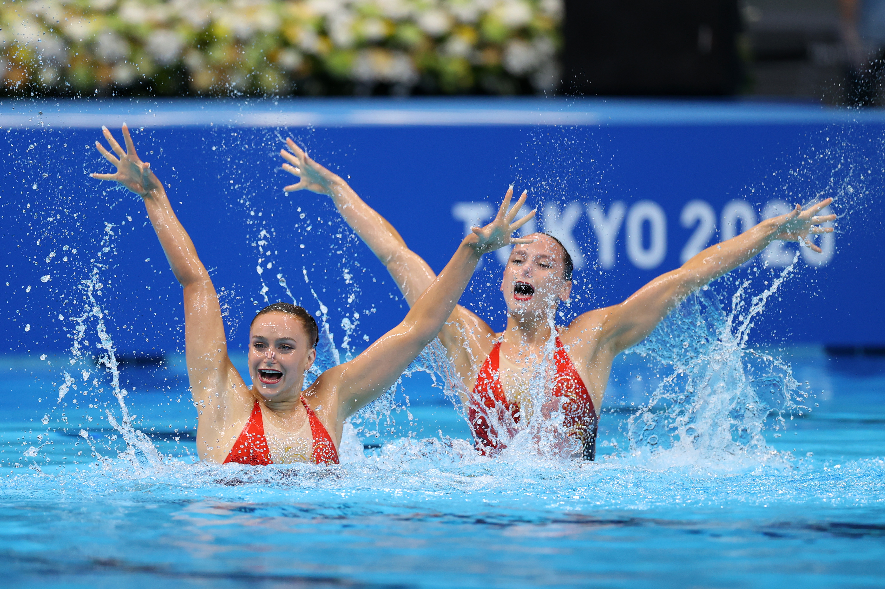
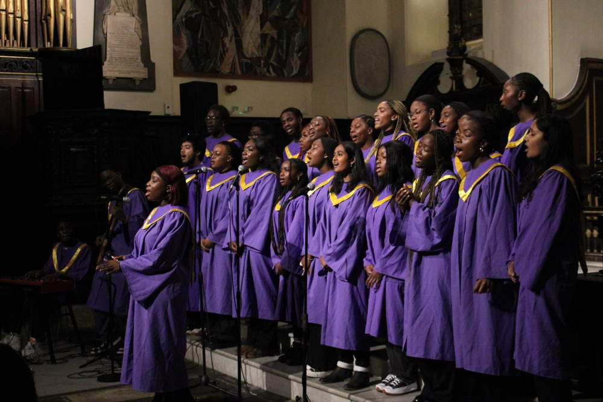
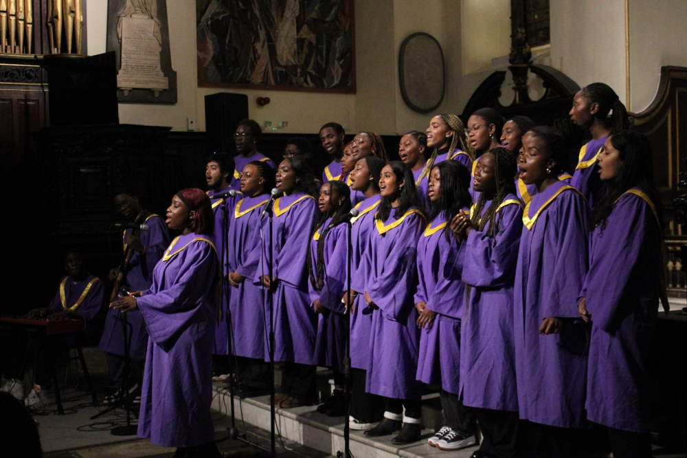
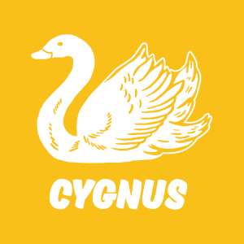
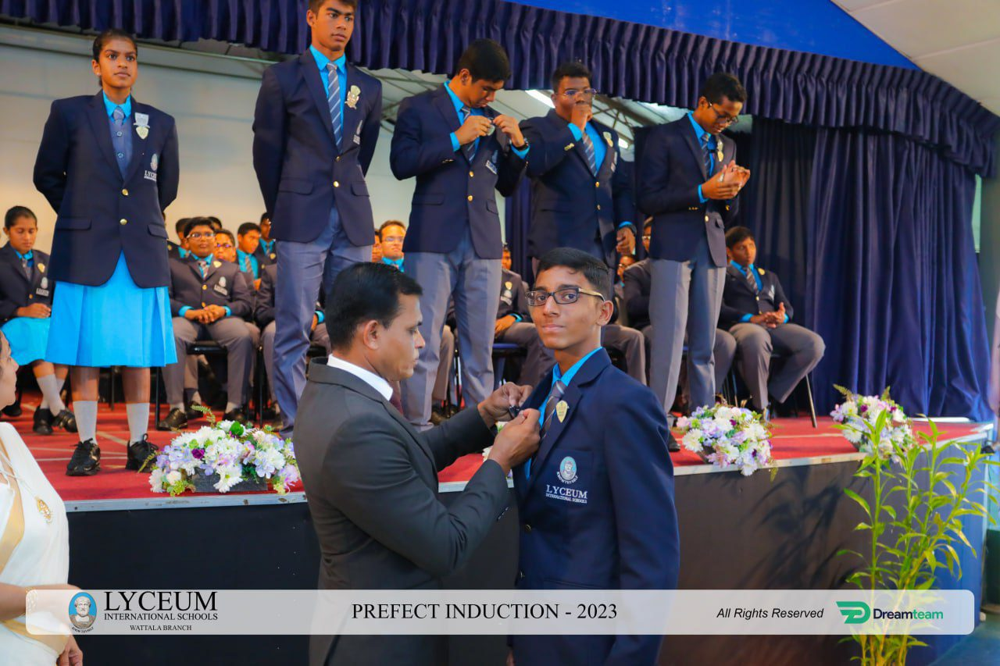

My Personal Achievements
Since I was in school I loved extra-curricular activities a lot. Because of this, I participated
in many indoor and outdoor extra-curricular activities such as, cricket,
badminton, tennis, swimming and also to some indoor extra-curricular activities like
chess, choir and many more etc.
Since I loved these extra-curricular activities a lot I used to go and participate to different events
held in and out of school, and I'm really happy to say that I have had wins and loses from each one of those tournaments.
 




 

Leaderships
Since, pre-school our school the Lyceum International School Ratnapura has been offering us
with many leadership opportunities this basically includes the class monitor or the library monitor, but after
grade 5 you will have the chance to become a junior stewardfrom grade six.
So, I thought of applying for the leadership programs which are offered by our school and I am proud to say that I have ranked up
my leaderships from junior steward, junior leader (for 2 years) and finally I beacme the deputy hose captain of our house which was named
Cygnus. By these I learnt a lot on how to control a crowd and on how to tolerate wins and loses.

